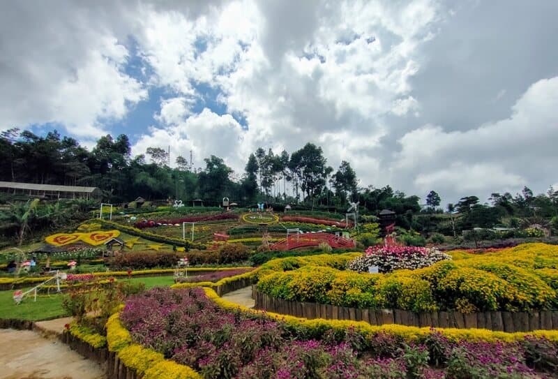
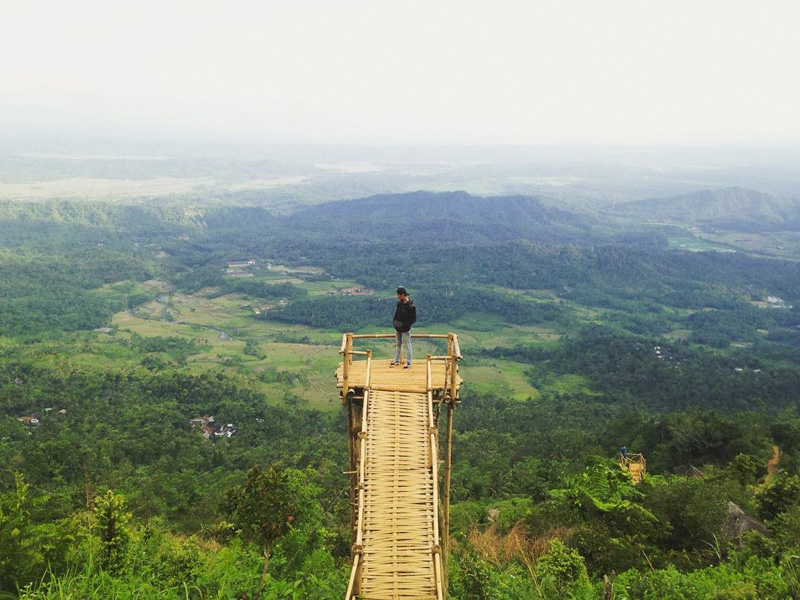
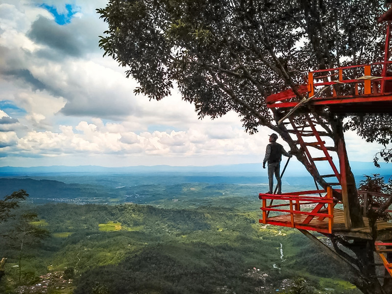

Place's
Cari Rekomendasi Tempat Liburanmu

Curug Tempuran
Desa Bumisari, Kec Bojongsari

Bukit Mertelu
Sangkanayu, Mrebet

Rainbow Garden Kutabawa
Desa Kutabawa, Kec Karangreja

Gunung Sendaren
Jl. Ardi Lawet, Panusupan

Rumah Pohon Igir Wringin
Desa Panusupan, Kec. Rembang

Goa Lawa
Desa Siwarak, Kec Karangreja

Jembatan Cinta Pring Wulung
Panusupan, Kec. Rembang